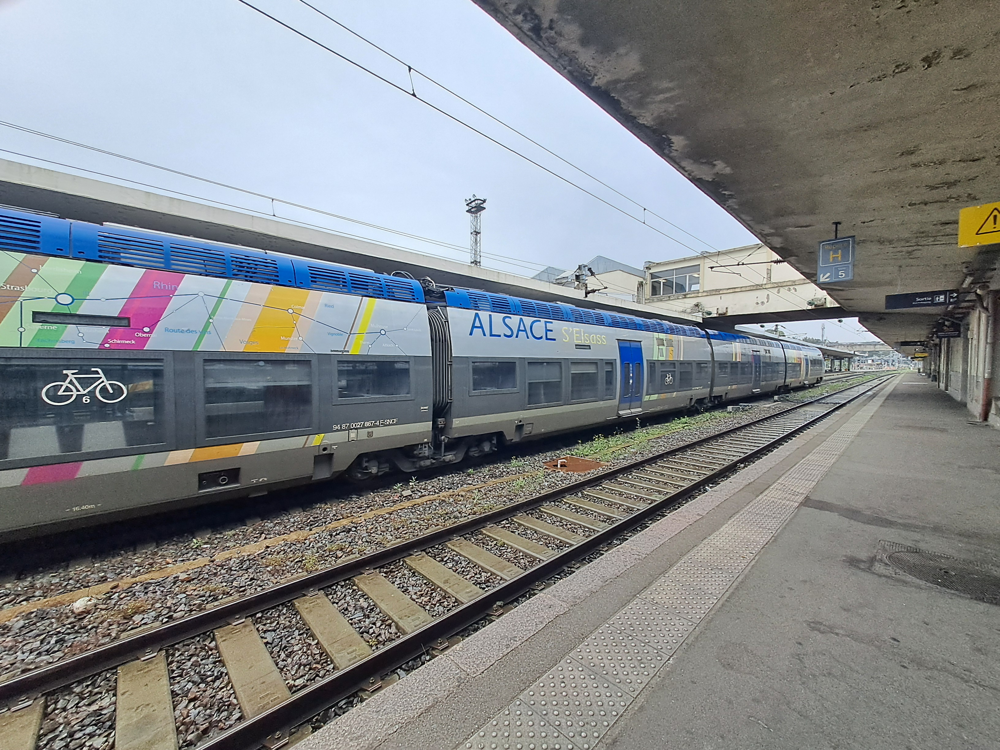

Le matériel ferroviaire moderne
Les TER 2nng (2 Niveaux Nouvelle Génération)
TER 2nng Rémi rénové en gare de Chartres

TER 2nng Pays-de-la-Loire en gare de Tours
Les AGC (Autorail Grande Capacitée)
AGC Alsace en gare de Mulhouse-Ville
AGC Champgne Ardennes en gare de Cernay
AGC Normandie derrière et Pays-de-la-Loire devant en gare du Mans

AGC Nouvelle Aquitaine à Saint-Pierre-des-Corps

AGC Pays-de-la-Loire en gare de Tours
Les Régio 2N

Régio 2N Pays-de-la-Loire en gare de Tours
Régio 2N Centre-Val-de-Loire en gare de Chartres


Régio 2n dit Omnéo Rémi en gare de Tours
Les Régiolis

Régiolis Garnd-Est en gare de Mulhouse

Régiolis Nouvelle-Aquitaine en gare de Tours

Régiolis Centre en gare de Saint-Pierre-des-Corps
Les A TER ou X 73500

A TER Centre en gare de Tours

A TER Pays-de-la-Loire et Nouvelle-Aquitaine en gare de Tours
Les anciens autorails

X TER Centre en gare de Tours

Autorail électrique Rémi en gare de Tours
Les corails
Corail livré Grand-Est en gare de Mulhouse

Corail livré Grand-Est en gare de Strasbourg

Une voiture Corail